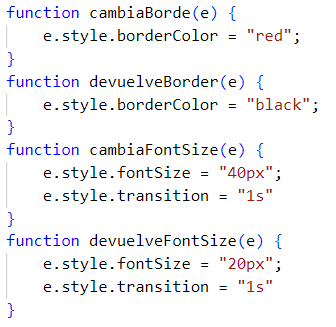

DOM Y EVENTOS EN JAVASCRIPT U2
Volver a unidad 2
Eventos de ratón
Pasa el ratón por encima y comprueba el cambio de color del borde. Si haces click aumenta el tamaño y con doble click vuelve al tamaño original. Con funciones externas.
